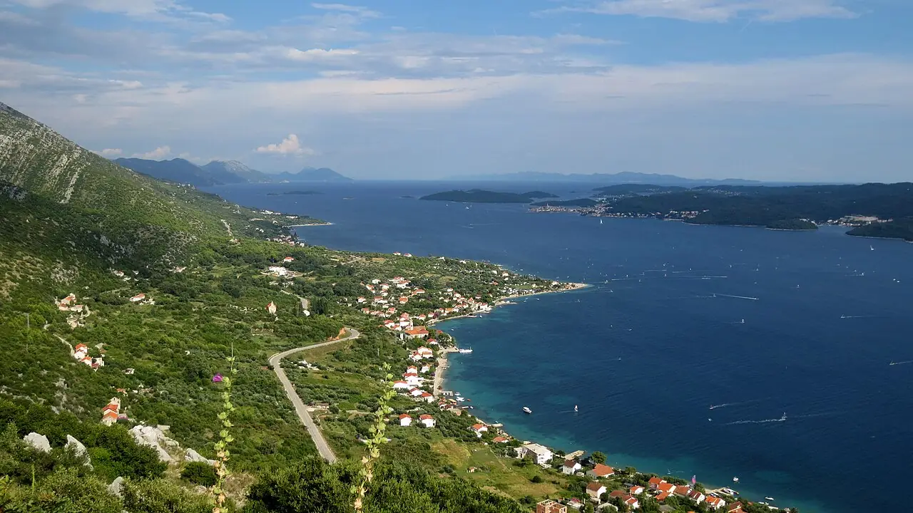

Viganj
Pelješac, Croatie · windsurf, kitesurf

Village du canal de Pelješac, face à Korčula, où le maestral thermique souffle régulièrement les après-midis d’été. C’est l’un des spots de windsurf et de kitesurf les plus connus de l’Adriatique.
- Lieu
- Pelješac, Croatie
- Niveau
- Intermédiaire
- Activités
- windsurf, kitesurf
- Type d'eau
- Mer / océan
- Coordonnées
- 42.98, 17.10 (position approximative du secteur)
Dangers à connaître
- Trafic de ferries et de bateaux dans le canal.
- Maestral qui forcit l’après-midi ; la bora peut être violente.
Le conseil d'Ocean Buddy
Le canal est emprunté par les ferries entre Orebić et Korčula : reste dans la zone de navigation des écoles.
Ouvrir dans Ocean Buddy Télécharger sur l'App Store
Source : Fiche Ocean Buddy · septembre 2026 · à vérifier localement.